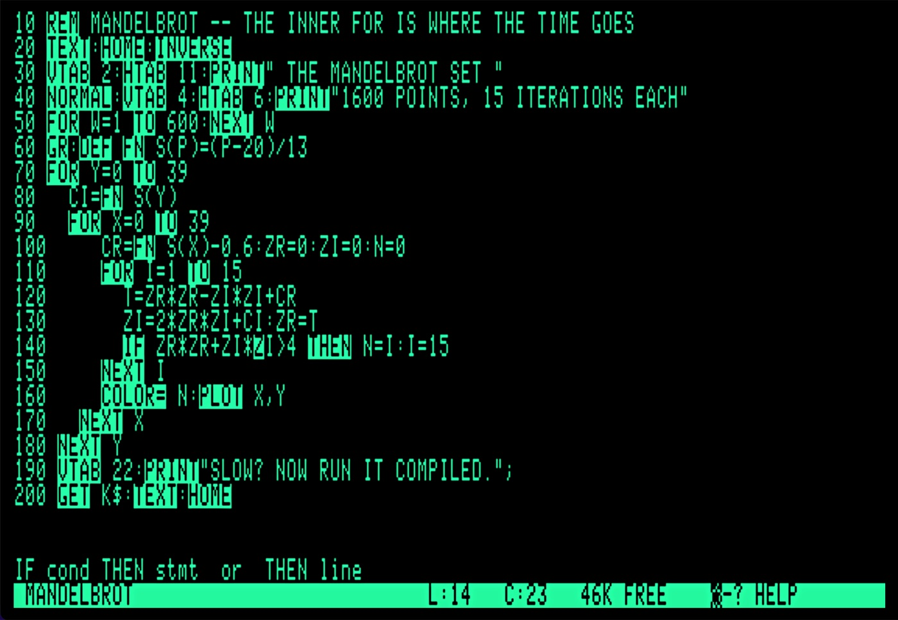
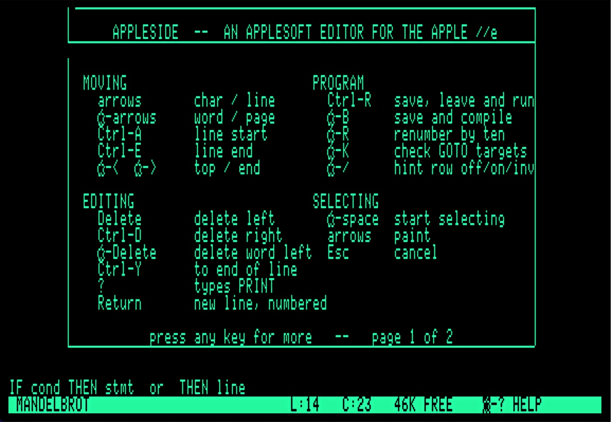
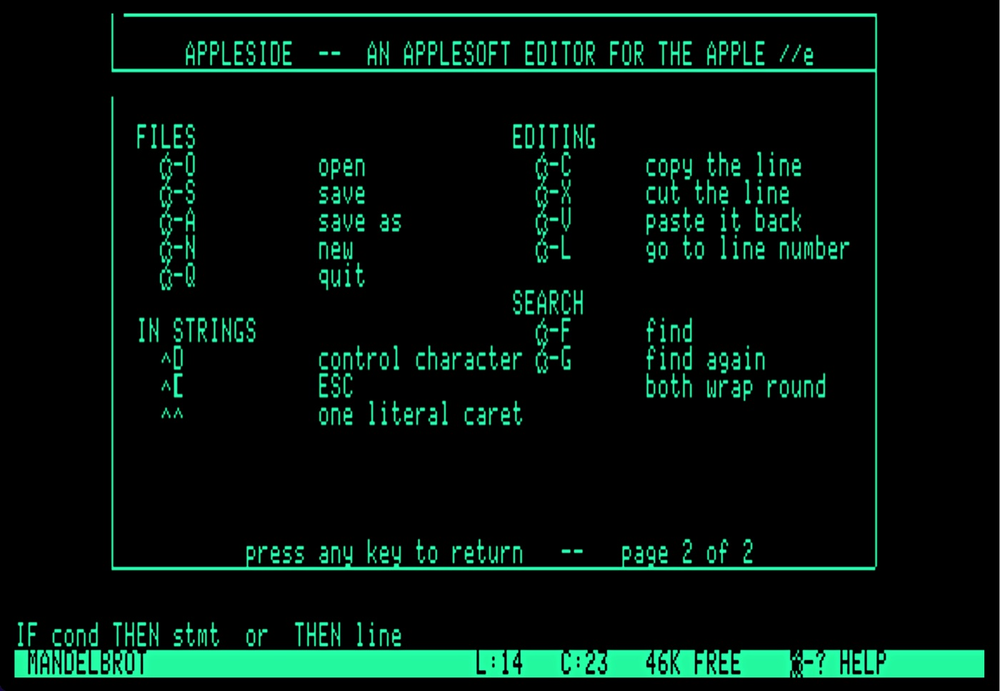

An Applesoft editor for the Enhanced Apple //e
— and a compiler for what you write in it.
Fully integrated and completely free.
Applesoft came with an editor – it was the line number. You typed
140 again and the old line 140 went away, and when you
wanted to see what you had written, you typed LIST and
watched line 140 go past.
ApplesIDE gives you a full editor, just like any modern IDE. Jump a word at a time. Go to a specific line number. Search for any text. Everything you expect from a real editor.
Applesoft keywords inverse as you
type — all ninety-eight of them — but not the ones inside a string or
after a REM. Press
Return and the next line number appears. Press ? and
you get PRINT, just as you do in Applesoft. During all of that, the real-time hint line tells you the exact syntax of the current keyword.
ApplesIDE is 100% pure assembly language, so it's fast and responsive.
Open any existing Applesoft program and you'll see it with highlighted keywords, indented FOR loops, and all of ApplesIDE's other features. All the special
formatting is calculated in real-time, not stored in the file.
Open-Apple-R renumbers by ten and takes every
GOTO, GOSUB, THEN and
RUN with it. If a reference is already broken, ApplesIDE says so
and changes nothing, because a renumber that half works is worse than
no renumber at all.
A long line scrolls sideways rather than wrapping. Because breaking a line in BASIC does not reformat the program, it changes it.
When you're ready to try it out, Ctrl-R saves your file, drops you
into BASIC and runs your code. Relaunch the editor and your code loads automatically.
When you're ready to try it faster, Open-Apple-B saves your code and passes it to the ApplesIDE compiler, which reads the tokenised file and writes a
binary you can BRUN.
On a 1MHz //e, you should see a speed-up of five to twelve times, with output that is the same to the last digit.
What the compiler cannot do, it refuses by
name and line number, rather than compiling something that runs and
quietly gives you the wrong answer. If the compile fails, your code is automatically re-opened in the editor. If it succeeds, you're dropped into BASIC, and ready to BRUN.
Your authorized Apple dealer will not be able to help you with any of this. There is, instead, a download button.
Because the second-best thing an editor can do is tell you what the best thing was.

Open-Apple-? puts
every command over the top of your program.
Ctrl-R saves it, drops into BASIC and runs it;
Open-Apple-B hands it to the compiler instead.
^ in front of them. ^d to issue DOS commands, ^h to backspace, and so on. The sample on the disk plots sixteen hundred points and takes fifteen iterations over each one. Interpreted, you have time to make tea.
ApplesIDE BASIC Compiler COMPILE WHICH FILE? MANDELBROT LINES: 20 VARIABLES: 11 STRINGS: 1 ARRAYS: 1 CONSTANTS: 13 WROTE CMANDELBROT, 2232 PRESS A KEY -- L LISTS WHAT IT FOUND
The counts go up where they stand as it reads your program, so what you watch is the thing being read rather than a listing scrolling past. Twenty lines of Applesoft in, 2,232 bytes of 6502 out — and L shows every variable, its address, and every constant it found, if you ever want to see the working.
The chart below shows the result of running the same three lines of arithmetic three thousand times, in four different ways. Nothing about the sum changes. The only difference is what surrounds the loop — and in Applesoft, what surrounds determines how fast it will be.
| The same loop… | Applesoft | Compiled | Quicker by |
|---|---|---|---|
| on its own, at the top of the program | 33.79s | 6.04s | 5.6× |
| with 200 lines sitting in front of it | 66.73s | 6.03s | 11.1× |
| with 30 other variables used before it | 38.78s | 6.11s | 6.3× |
| with both | 71.48s | 6.13s | 11.7× |
Applesoft finds a line by walking the program from the beginning, and finds a variable by scanning its table from the beginning. So the same loop takes twice as long simply for being further down a longer program.
Look down the compiled column: 6.04, 6.03, 6.11, 6.13. It barely moves. Compiling does not make that walking and scanning quicker, it does away with it. With less to do, your code executes faster.
Download the disk image below. It is a bootable ProDOS 8 volume named APPLESIDE, with the editor, the compiler, BASIC.SYSTEM and a sample program on it.
In an emulator, mount APPLESIDE.po in
drive 1 and boot it. On real hardware, write it to a 5.25-inch disk
or drop it on the card your Floppy Emu or CFFA3000 reads.
Press any key at the splash screen, type your first line number, then start coding.
Open-Apple-? shows you everything else.
To see what the fuss is about, open
MANDELBROT with Open-Apple-O, run it with
Ctrl-R, and wait. Then compile it with
Open-Apple-B and BRUN CMANDELBROT.
Free, and always will be, under the MIT licence. If it saves
you an afternoon of typing LIST, that is payment enough.
The source — editor, compiler and the notes on how both were arrived at —
is on GitHub.
Apple //e & ][+ · Free
The Markdown editor ApplesIDE is built on. Eighty columns of green text, a cursor, and a status line — and it writes an ordinary text file with only the line breaks you actually typed.
Have a lookiPhone · Free
The GPS track recorder that remembers where you went. Distance, time, altitude and speed, with the phone in your pocket and the screen locked. Nothing leaves the device.
Have a lookMac, iPhone & iPad
History deserves better than a bullet list. Build timelines worth looking at, keep them in step across your devices, and export them when they are ready to be seen.
Have a look